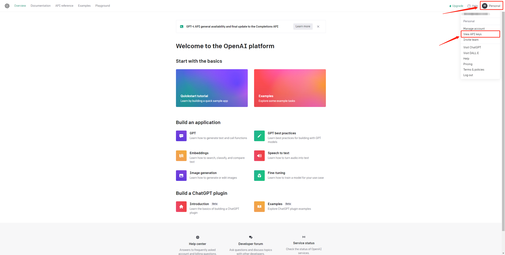

本章では、このチュートリアルを読むために必要な環境の設定方法を紹介します。これには、Python、Jupyter Notebook、OpenAI APIキー、本書のコードを実行するために必要な関連ライブラリが含まれます。
以下の環境設定には、一度だけ設定すればよいもの（Python、Jupyter Notebookなど）と、コードを再現するたびに設定が必要なもの（OpenAI APIキーの設定など）があることにご注意ください。
公式サイトからのインストールは遅いため、清華大学のミラーからAnacondaをインストールすることができます。
対応するバージョンを選択してダウンロード・インストールしてください。
すでにAnacondaがインストールされている場合は、以下の手順をスキップできます。
Windowsシステムを使用している場合は、Anaconda3-2023.07-1-Windows-x86_64.exeインストールパッケージをダウンロードして直接インストールできます。
MacOSシステムを使用している場合
Anaconda3-2023.07-1-MacOSX-x86_64.shをダウンロードAnaconda3-2023.07-1-MacOSX-arm64.shをダウンロード
そして以下の操作を実行します：# Intelプロセッサを例に、ファイル名は変更される可能性があります
sh Anaconda3-2023.07-1-MacOSX-x86_64.sh -b次に、ターミナルShellを初期化して、condaを直接実行できるようにします。
~/anaconda3/bin/conda init現在のシェルを閉じて再度開くと、コマンドラインの前に(base)が表示されます。これはanacondaの基本的なpython環境です。次に、以下のコマンドを使用して新しい環境を作成します：
# chatgptという名前でpythonバージョン3.9の環境を作成
conda create --name chatgpt python=3.9 -y作成が完了したら、chatgpt環境をアクティベートします：
conda activate chatgpt!pip install -q python-dotenv
!pip install -q openai
## その他のpythonパッケージOpenAI APIキーを取得する前に、OpenAI公式サイトでアカウントを登録する必要があります。ここでは、すでにOpenAIアカウントを持っていると仮定し、まずOpenAI公式サイトにログインします。ログイン後は以下のような画面になります：

APIを選択し、右上のアバターをクリックしてView API keysを選択します。以下の画面が表示されます：

Create new secret keyボタンをクリックしてOpenAI
APIキーを作成し、作成したOpenAI
APIキーをコピーしてOPENAI_API_KEY="sk-..."の形式で.envファイルに保存し、.envファイルをプロジェクトのルートディレクトリに保存します。#
TODO:固定位置の確認待ち
以下は.envファイルを読み込むコードです
import os
import openai
from dotenv import load_dotenv, find_dotenv
# ローカル/プロジェクトの環境変数を読み込む
# find_dotenv()は.envファイルのパスを検索して特定する
# load_dotenv()はその.envファイルを読み込み、その中の環境変数を現在の実行環境にロードする
# グローバル環境変数を設定している場合、このコード行は何の効果もありません。
_ = load_dotenv(find_dotenv())
# 環境変数 OPENAI_API_KEY を取得
openai.api_key = os.environ['OPENAI_API_KEY'].envファイルを読み込むコードを関数としてカプセル化し、各章で直接呼び出してOpenAI
APIキーを取得できるようにします。
import os
from dotenv import load_dotenv, find_dotenv
def get_openai_key():
_ = load_dotenv(find_dotenv())
return os.environ['OPENAI_API_KEY']
openai.api_key = get_openai_key()